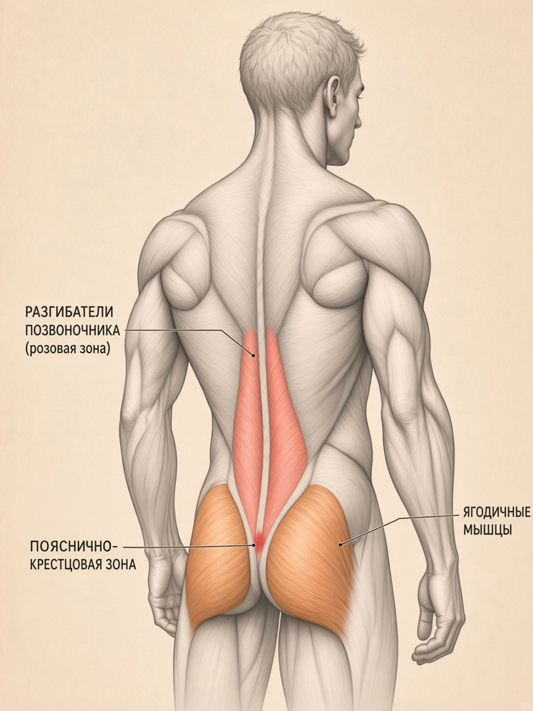
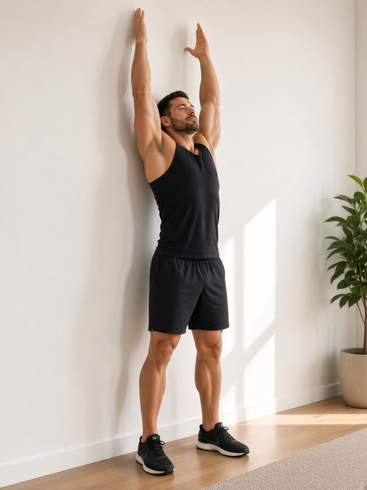
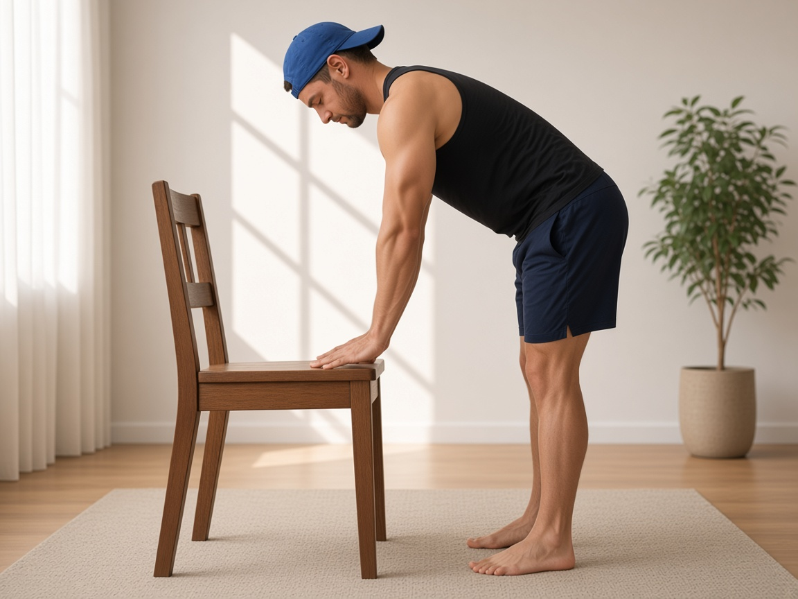
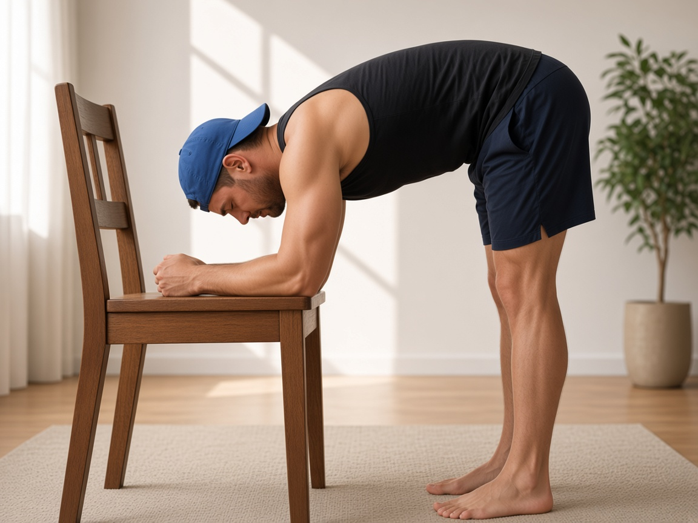
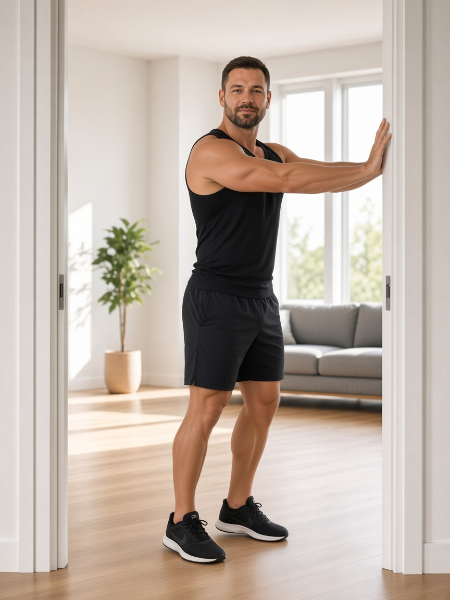
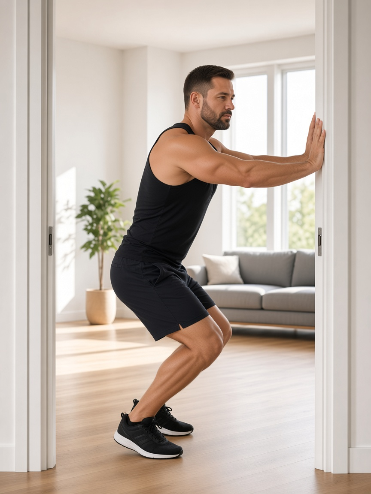
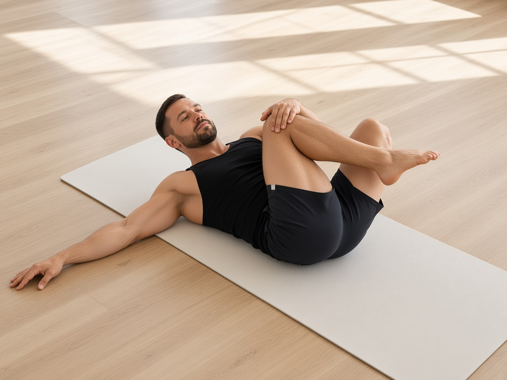

!
Только вне острой фазы
Комплекс — строго после снятия острого болевого синдрома. Если есть прострелы и трудно ходить — сначала к врачу. Курс НПВС по назначению обычно 5–7 дней.
01 / 04
Artur Cheremisin Fitness
Домашняя памятка
Декомпрессия, снятие спазмов и восстановление мобильности без осевой нагрузки.
Комплекс — строго после снятия острого болевого синдрома. Если есть прострелы и трудно ходить — сначала к врачу. Курс НПВС по назначению обычно 5–7 дней.
Пока грыжа активна, точечный массаж может усилить воспаление. Нужны декомпрессия и мягкое вытяжение.
Ни до позы, ни во время, ни при возврате поясница не напрягается. Вес на руках/ногах, кор полностью расслаблен.
Результат даёт регулярность изо дня в день, а не разовая тренировка. Формат: 10–15 минут каждый день.

Снимаем глубокий зажим, который тянет поясницу.
Убираем спазм в пояснично‑крестцовом отделе.
Возвращаем мобильность и декомпрессию без давления.
Дальше — упражнения. Каждое начинается с фото старта и финиша; штриховая линия показывает амплитуду движения.
02 / 04 · Упражнения
Разогрев
Блок 3


Важно: это разогрев и мобильность. Не давим на поясницу — только вытягиваемся.
03 / 04 · Декомпрессия

1 · Старт
2 · Низ
1 · Старт
2 · НизВажно: это не вис сверху на двух руках. Бок плотно к одному косяку, руки — в противоположный, опускание весом через руки (как со стулом).
04 / 04 · Ягодицы + итог

Скручивание